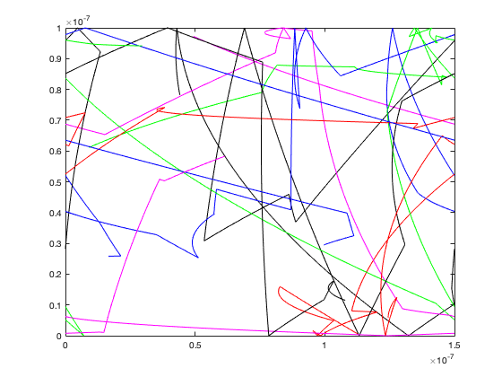
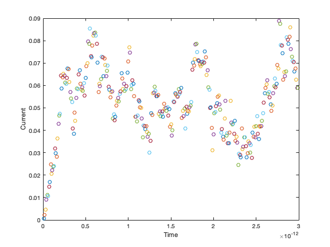
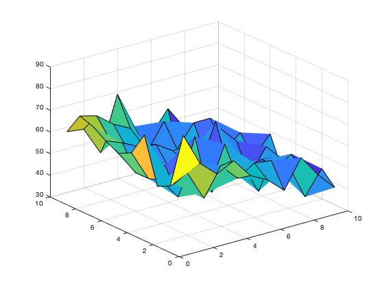
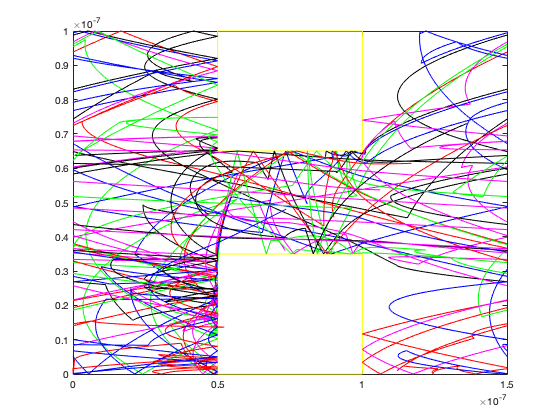
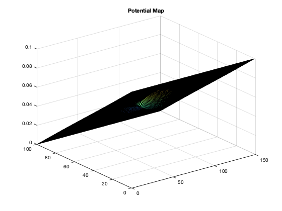
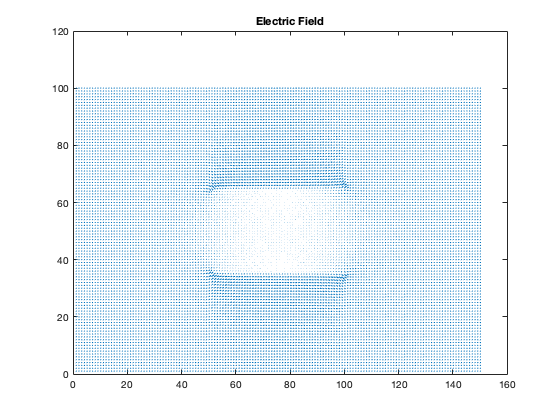
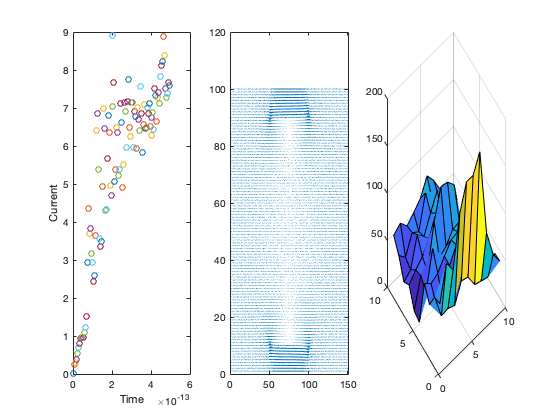
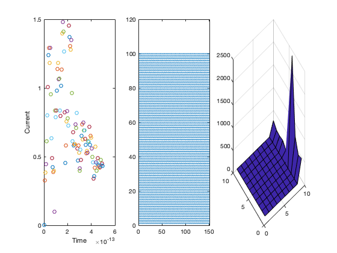

Contents
Finite Difference Method with Boxes
nx=100; ny=150; cond=11.68*8.54*10^-12; %10^-2; b=.1; p1 = 1; % Changing conductivity in regions changes [cMap] = Conductivity_Map (50,100,35,65,nx,ny,cond); %Creating g matix [V,G,B] = G_Matrix(nx,ny,cMap,b); %E-Field and Current Flow [Ex,Ey,FlowX,FlowY,Vmap] = E_field_J (nx,ny,cMap,V);
Part 1
The electric field applied is 6.6 * 10^5 . The force excerted on the electron is 1.056 * 10 ^-13 neutons. The acceration on the electron is 4.4632e+17 per time stamp. Currently the with the E-field is small there is minimal curve. When the E-field is increased there is much more noticable curves. The force on the particles is F = 1.0560e-13 and the acceleration is a=4.4632e+17 Now looking at the current by calculating the amount of electrons that leave the right side minuse the amount that leave through the left. This is show the drift density and to calculate the current : I=Vave*n*q*A where n is number positive drift electrons going throught the right side. The current varies quite a bit at the beging but is always positive. After time the current end up concerating around 0.12 but it still varies within this area, this is as expected since the electrons scatter and will effect the current at all times.
Collision_MFP()  
Part 2
Enhancements(Ex,Ey) figure(4) surf(Vmap) title('Potential Map') figure (5) quiver(Ex,Ey) title ('Electric Field')  
Part 3
So it it noticable that whne the bottle neck is big the current is also high around ~8. When the bottle neck is small the current is much lower. This is shown on the plot, the area between the insulating region is very small so the the e-field look simular throughout but this is not the case. Where the bottle neck is big the density becomes more concertrated in the middle and where the output would be for this device. To make this simulation more accurate starting with adding a conductive region for the non-insulating area to mimic an actual conductor (metal, or semi conductior silicon). This would depend on the model one is trying to mimic. Another possibility would not make the electrons that leave the right side to return back into the left side as this would not happen in real life. Adding new electrons that enter from the left side to mimic and actual circuit could be done in order to add more complexisty and a more accurate simulation.
[cMap1] = Conductivity_Map (50,100,10,90,nx,ny,cond); [V1,G,B] = G_Matrix(nx,ny,cMap1,0.8); [Ex1,Ey1,FlowX,FlowY,Vmap] = E_field_J (nx,ny,cMap1,V1); [cMap2] = Conductivity_Map (50,100,55,45,nx,ny,cond); [V2,G,B] = G_Matrix(nx,ny,cMap2,0.8); [Ex2,Ey2,FlowX,FlowY,Vmap] = E_field_J (nx,ny,cMap2,V2); Curr_big_W(Ex1,Ey1) Curr_small_W(Ex2,Ey2) 